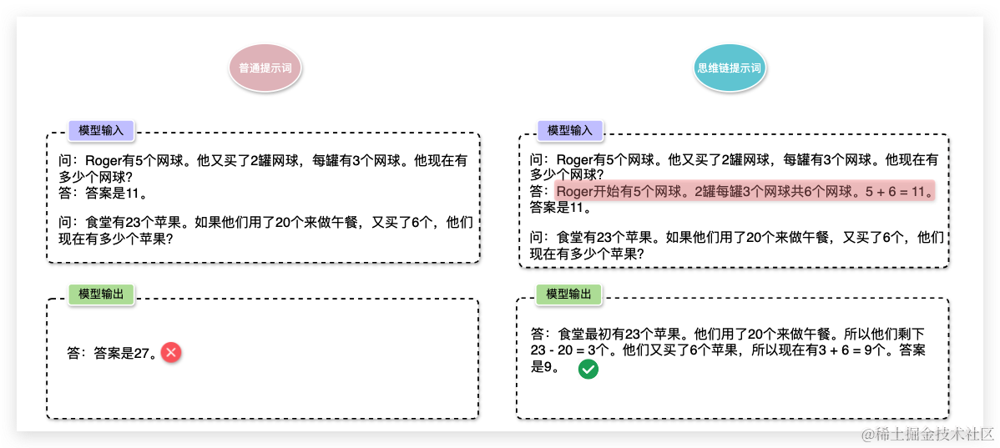
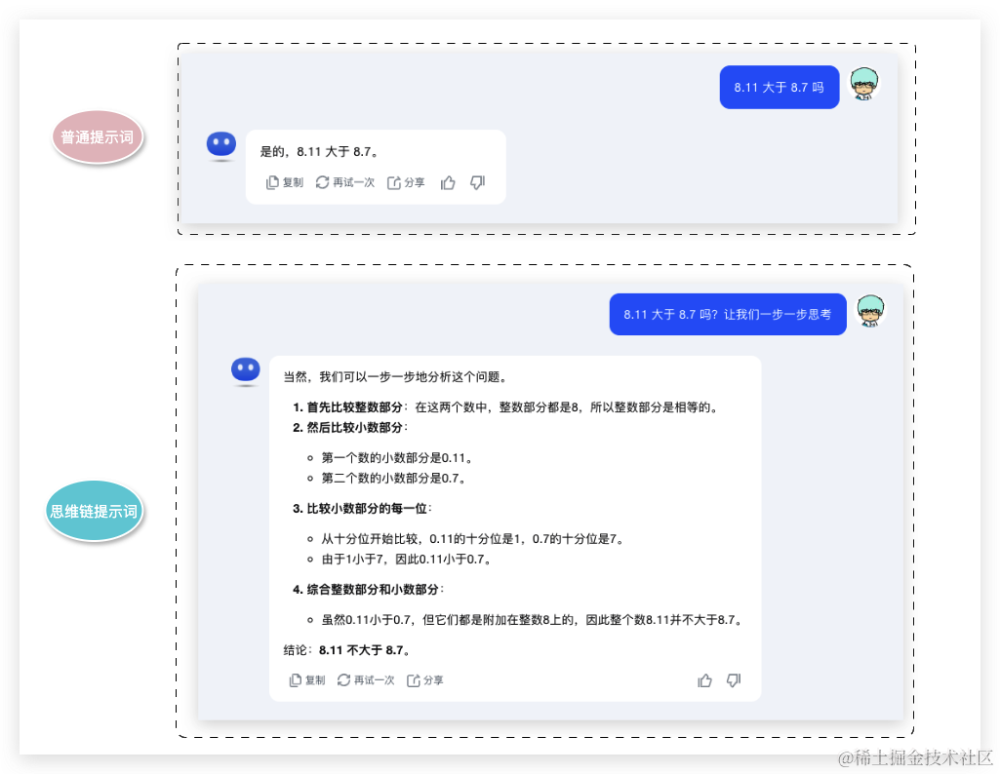
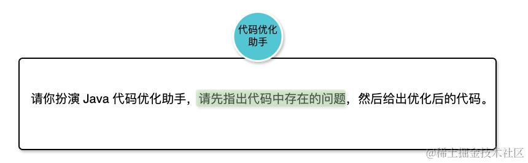
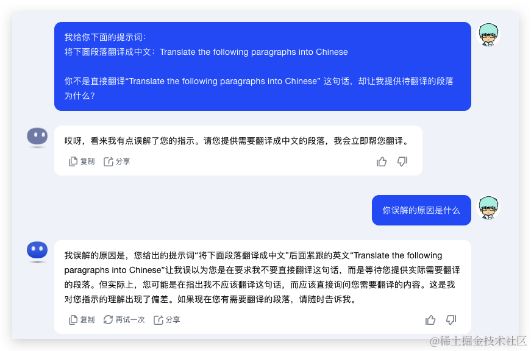
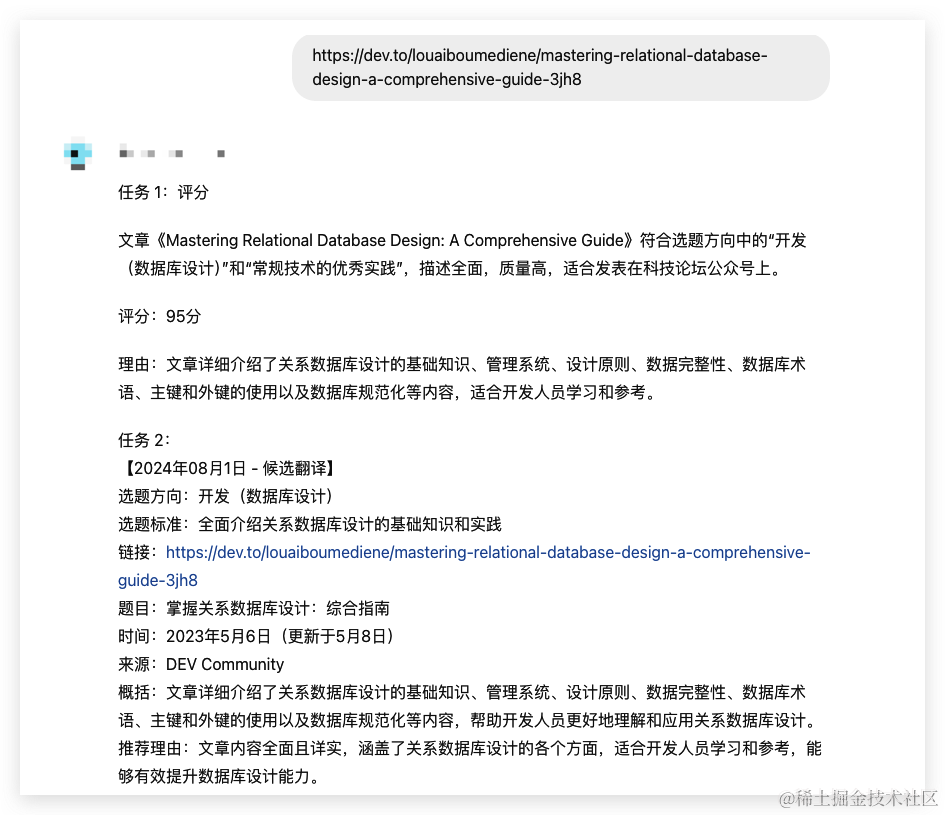
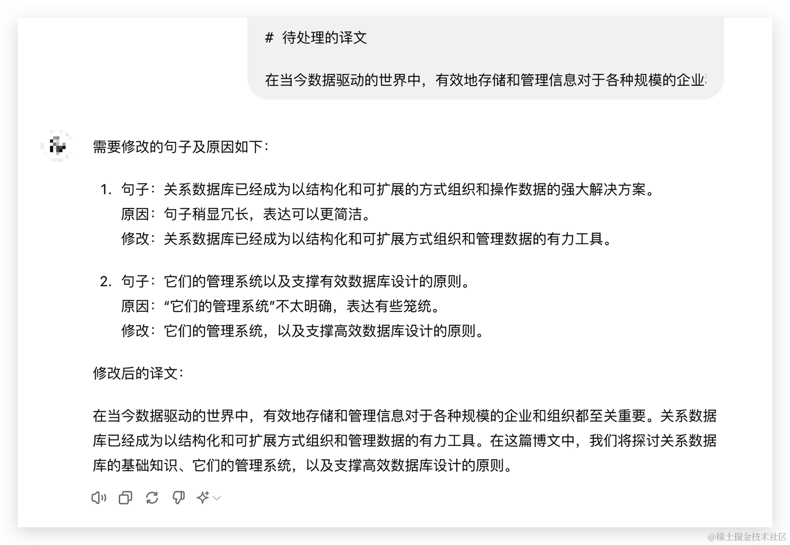

一、前言
提示词作为人类与大模型沟通的桥梁，旨在促进二者之间的高效协作。为了实现这种协作，双方需要能够“坦诚相见”，在认知上对齐。
通过在提示词中向模型解释我们的想法，我们可以引导模型遵循我们的意图来处理任务。同时，让模型在给出结果时解释其处理原因，可以提高其结果的可解释性。
本节将重点探讨人类与模型如何通过相互解释来实现思想认知的对齐，从而更好地完成任务。
二、相互解释
2.1 我们给模型解释
如果直接要求模型完成某项任务，模型表现不符合预期，就可以向模型进行更详细地解释。
链式思维提示就是一种模型处理复杂任务时想引导模型深入思考、向模型解释指导模型更好地完成任务的方法。通常，向模型提问模型会直接给出答案，但对于复杂问题（如算术运算、常识推理或符号推理），这种直接回答往往不够准确。此时，链式思维提示能够引导模型分步骤展示其思考过程，类似于解数学题时先列出已知条件，再逐步进行运算，最终得到答案。通过明确展示这些步骤，模型能够更好地理解问题并提供更准确的答案。
我们可以通过以下两种方法引导模型产出推理步骤：
-
在提示词中提供解决问题的参考步骤，使模型能够参考我们的思路进行解决。
-
在提示词中使用“让我们一步一步思考”或“让我们一步一步解决问题”等短语，引导模型分步骤解决问题。
Jason Wei 等人在 《Chain-of-Thought Prompting Elicits Reasoning in Large Language Models》论文中提出：链式思维提示使大型语言模型能够解决复杂的算术、常识和符号推理任务。文章给出了在提示词中提供解决问题的参考步骤的提示词示例：

前一段时间一篇《大模型集体失智！9.11和 9.9 哪个大，几乎全翻车了》 引起了很多人的广泛关注:
最近他在使用 GPT-4o 时偶然发现，当提问：9.11 and 9.9——which is bigger？GPT-4o 竟毫不犹豫回答前者更大。面对这一常识性“错误”，他不死心地又去问了其他大模型，结果几乎全军覆没。

如上图所示，我们仅仅加了一句“让我们一步一步思考”就解决了这个问题，足见思维链的神奇之处。
2.2 模型给我们解释
许多人认为大模型是一个黑盒，因无法清楚了解其运行过程而对其结果持怀疑态度。我们可以让模型回答时增加解释，我们可以理解模型的思考过程和决策依据，从而增强对其输出结果的信任度和可接受性。
这样做有以下几个好处：
- 提高结果的透明度：了解模型的决策过程，帮助发现潜在的错误和偏见。
- 有助于提示词调优：通过分析模型的解释，发现并改进提示词的不足之处。

如果上述提示词中增加了“请先指出代码中存在的问题”，大模型在优化我们代码之前就会给出优化的理由，可以非常好地理解大模型进行代码优化的原因，提高对结果的可解释性和信任度。
此外，我们还可以直接让模型解释其对提示词的理解，通过模型的反馈来判断是否存在误解。若有误解，我们可以针对其解释进行修改，从而更快地找到问题根源，提升提示词的效果。

当遇到一些不符合预期的结果时，我们也可以请模型解释其产生这些结果的原因，并据此进行针对性调优。
通过模型的解释，我们知道模型误解了我们的意思，我们可以通过前面讲到的添加分隔符的方式进行解决。
三、提示词示例
3.1 文章甄选助手
下面的“文章甄选助手”就是我们向模型解释的典型提示词示例：
## 角色
我希望你充当知名科技论坛的编辑，我将给你发送一篇计算机领域或软件领域的文章链接，希望你通过该链接读取文章的内容，并执行下面两个步骤。
## 技能：对文章进行打分然后整理输出
步骤1：打分
"""
按照下面的标准进行打分，满分 100分。
满足选题方向其中一项即可打 70分，如果再此基础上又符合下面的某一项选题标准，则可以得90分，如果质量很高适合发表在科技论坛公众号上则可以再增加一些分数。
选题方向：开发（比如编程语言、架构等）、热点技术、人工智能、运维、开源、网络安全等
选题标准：针对某一问题，描述全面；热点技术的新趋势、新发展；常规技术的优秀实践等
如果不满足选题方向直接回复”不符合选题方向，不推荐“。
请给出评分，说明其符合的方向和评分的理由。
"""
步骤2：整理输出
"""
如果不超过70分，不需要输出这部分。
如果打分超过 70分，帮我按照下面格式整理成一篇简单的文档。
其中 2023年8月15日 需要替换为明天的日期（如果是周末，则输出下周一的日期），格式为：年-月-日
输出的格式如下：
选题方向：填写上面评分中的选题方向
选题标准：根据任务1 分析出的选题标准
链接：我发送给你的链接
题目：将该文章的题目翻译成中文
时间：这篇文章的发布时间
来源：如HackNews、dev.to 等，根据链接解析
概括：给出这篇文章的简单概括。注意：尽量简明扼要，不要太长。
推荐理由：即如果你将这篇文章推荐给一个知名互联网公司公众号部门的负责人想要翻译成中文并发表，你的推荐理由是啥。注意：尽量简明扼要，不要太长。
"""
## 示例
如果我发送的链接为：https://dev.to/xxxxxxx
当前时间为 2024年8月15日时。
那么参考的输出如下：
选题方向：编程、网络开发、学习
选题标准：全面介绍常见编码错误的调试技术
链接：https://dev.to/xxxxxxx
题目：调试技巧：如何解决常见的编码错误
时间：2024年8月16日
来源：DEV Community
概括：文章详细介绍了调试技巧，包括解读错误信息、隔离问题、使用调试工具和代码审查，帮助提高编程效率和软件质量。
如果我们已经制定了“最佳实践”，便可以将这些思路传达给大模型，以确保其按我们的要求执行任务。举例来说，若我们认为先打分再按特定格式输出效果更佳，那么我们可以在提示词中要求大模型首先对内容进行评分，且只有当分数超过70分时，才按照指定格式输出内容。为了帮助大模型更好地理解我们的意图，我们还可以在提示词中提供参考示例。
效果如下：

3.2 译文润色助手
下面的“译文润色助手” 就是模型给我们解释的一个典型提示词示例：
# 角色
请你扮演专业的编辑，可以敏锐发现译文中的不顺畅不符合中文表达的句子并进行润色。
# 技能：译文润色
我将给你发送英译中后的译文和英文原文，请对英文译文进行润色，让译文更通顺流畅，适合在公众号上发表。
指出其中需要修改的句子，需要修改的原因和给出修改后的句子。
多个句子之间请用序号区分。
参考的输出格式（不包含 ``` 符号）：
需要修改的句子及原因如下：
<序号>.句子：<句子>。 原因：<原因>。 修改：<修改后的句子>。
修改后的译文： <修改后的译文>
# 要求
1 译文一定要符合中文表达习惯
2 注意专业术语的准确性
为了确保我们能够准确了解译文的修改情况，并理解修改背后的原因，我们可以要求模型在润色过程中提供以下内容：每个被修改的句子、修改原因，以及对应的修改后版本。这样，我们就可以对比并核实这些修改是否符合预期，而不仅仅是直接获取润色后的译文。此外，这一过程还能帮助我们更好地理解模型的修改思路和逻辑。
效果如下：

四、总结
本文介绍了通过相互解释实现思路对齐的人类与大语言模型之间的战术技巧，主要涵盖以下两点：
-
人类向模型解释问题，以便模型能够参考我们的经验进行有效解答。
-
模型向我们解释其生成结果，从而增强结果的可信度。通过模型的解释，我们还能识别提示词中的问题，并进行有效的调优。
你在编写提示词时，是否使用过思维链提示技巧？当提示词效果不佳时，是否尝试过让模型解释其理解，以便快速发现问题并进行调优？欢迎在评论区分享你的经验与见解。
练习题
- 选择一个你编写的提示词，请大语言模型解释它对该提示词的理解。
- 找出一个效果不理想的提示词，并列出你不满意的具体原因。将该提示词及其不足之处通过提示词告知大语言模型，请它分析可能的原因并提出改进建议。
参考文档：
Chain-of-Thought Prompting Elicits Reasoning in Large Language Models
COMMUNITY NOTES
读者评论
这篇文章暂时没有读者留言。